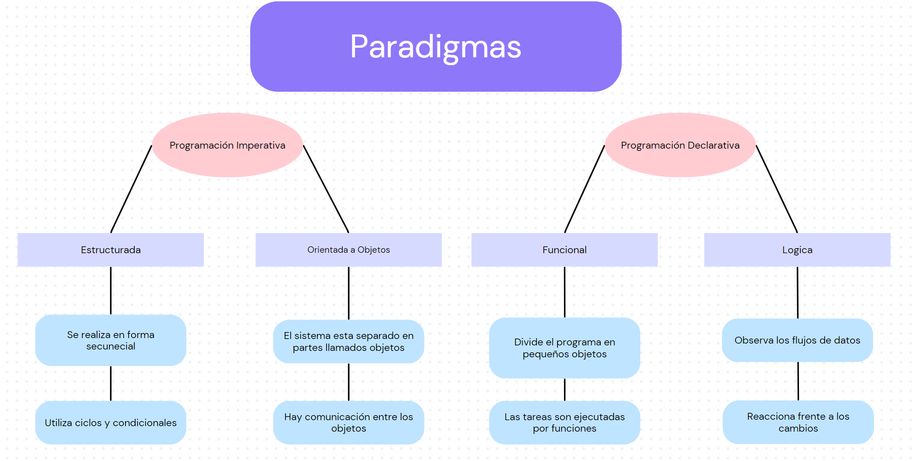

Introducción a los distintos paradigmas de programación
Es una forma que tiene un codigo de resolver una tarea. En el mundo de la programación existen distintos paradigmas que se usan para resolver este tipo de tareas, las mas conocidas son la Programacion Declarativa y la Programación Imperativa.
Explica con tus palabras ¿cuando es conveniente usar Programación Declarativa y Imperativa?